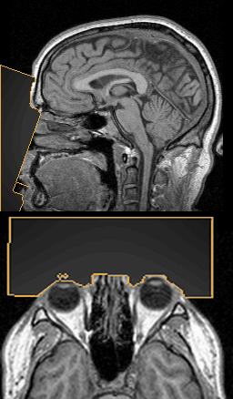
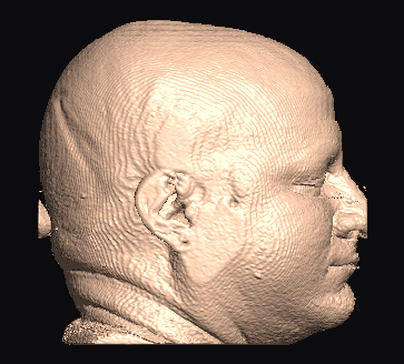
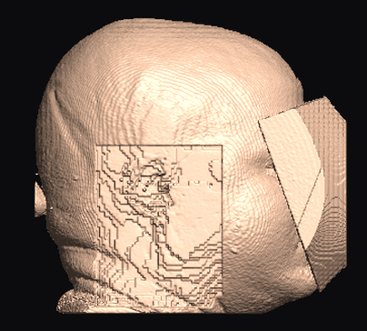
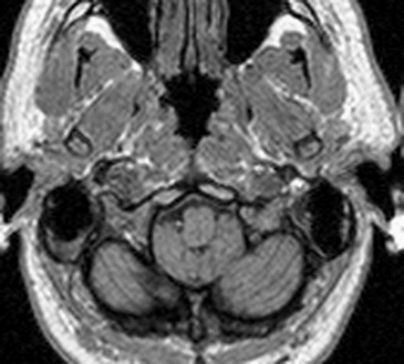
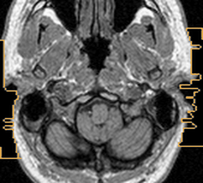
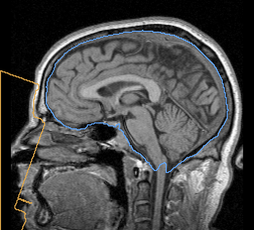

The face leaves.
The data stays.
RadVeil finds the face in a head scan the way an attacker would — it renders the volume as a portrait and runs a face detector on it — then removes it, and accepts the result only when that detector fails on the output. Ears too, on request. Every voxel outside the mask stays bit-exact.
pip install radveil
 inputadaptive
inputadaptive
- Verified, not assumedThe output is attacked with a face detector before it is accepted.
- CPU onlyIts own inference engine. No GPU, PyTorch, ONNX Runtime or TensorFlow.
- Apache-2.0Permissive dependencies only, SBOMs with every release.
Localize like an attacker. Verify like one too.
No atlas, no registration. The tool that finds the face is the same class of tool that has to fail on the result — that symmetry is the whole design.
Render
A CPU ray caster draws portrait views of the volume, plus a per-pixel map of 3D scanner coordinates. LPS, RAS, oblique or wrong affines are all handled.
Detect
An off-the-shelf 2D face detector, built in and run in pure Rust, looks at the renders — the attack shared data has to survive.
Lift
Each 2D landmark becomes a millimetre-accurate 3D point via the position map. Views must agree in 3D, or they are rejected.
Rewrite
Face-aligned regions, scaled from the measured inter-eye distance, are blurred, cut, blocked or adaptively averaged. Nothing else changes.
Verify
The result is re-rendered and re-attacked. Still detected? Escalate, up to an opaque fill that ends it by construction.
Numbers from the evaluation
On public data. This is an early release: large, diverse validation data was not available, so review outputs before sharing data.
adaptive anonymization with verification onFace figures: the public SynthStrip evaluation set
(582 scans of many contrasts, with expert brain masks), radveil auto, mode="adaptive".
RadVeil processed 201; the rest were refused, mostly scans without a visible face (already defaced, or a field
of view that ends above it) and non-structural series. Ear figures: 106 pinnae hand-marked on 53 public IXI scans;
the ear cut modified 0 brain voxels on the 50 IXI T1 with expert brain masks.
Four ways to take a face apart
Pick a mode to see the surface render and the voxels themselves — a mid-sagittal slice above an axial slice through the orbits, with the region outlined in amber.

3D Slicer’s public “MRHead” sample, donated by the person pictured for use
without restriction, run through radveil auto with default settings. On this head verification escalated
blur and adaptive twice before no face was found; verified cut still read as a
face and was escalated to a fill, so it is shown with verification off.
The ear is a fingerprint too
Pinna shape is stable over a lifetime and matchable from a surface reconstruction. Ear removal
is opt-in — region defaults to face — and can use its own mode in the same pass
(ear_mode="cut" with an adaptive face).
Measured, not assumed
No landmark model emits ear points, so RadVeil turns the volume into a surface height map and finds each pinna as a protrusion above the scalp baseline.
Skin-deep at the scalp
The medial wall follows the measured scalp and stops at the skull — the whole pinna goes, the brain is not reached.
Tells you when it can’t
An ear outside the field of view is reported as
detected: falsewith a flagged fallback box — never silent.





Takes the face, leaves the brain
The face region follows the measured skin, about 4.5 mm deep, so it stays above the skull. A field-of-view cut that merely looks like a face is refused rather than cut.
Brain guard
--brain-guardextracts the brain from the input and never modifies it or anything within 3 mm of it. On the SynthStrip set: 0 scans touched, closest change 3.6 mm.Brain check
--brain-checkreports how many brain voxels changed and how close the region came; the CLI exits with status 3 if any did.Brain extraction
radveil deskull: SynthStrip ported to pure Rust (any MRI contrast, CT), a classical model-free method, or your own network. Mean Dice 0.969 on the SynthStrip set.
Built for pipelines that can’t afford surprises
Refuses instead of guessing
No plausible face, an already-defaced scan, or a “face” on a field-of-view cut: it raises and writes nothing. Scans that end at the nose opt in with --partial-face.
Any orientation, MRI and CT
LPS, RAS, oblique and wrong affines (a six-direction sweep finds the face). Air, not 0, fills CT. Datatype, scaling and header are kept.
Auditable mask
Export the exact anonymization mask; every voxel outside it is bit-identical. anonymization_mask returns the region without changing anything.
Two independent detectors
A built-in detector (Apache-2.0 models), optional dlib with its CC0 5-point model as an alternative or fallback_detector, or plug in your own.
Batch and services
deface_batch on threads (~11 scans/s on 14 cores); bytes in, bytes out with Volume.from_bytes for services.
Tunable verification
Re-attacked from every detected yaw and tilted 15°; --verify-effort trades speed against attack angles. Opt-ins for chin, lower lip and untouched background air.
Three lines to a verified deface
One Rust core sits behind every interface, so parameters and reports are the same wherever you call it from.
import radveil
report = radveil.deface_auto("t1.nii.gz", "t1_defaced.nii.gz", mode="adaptive")
# {'views_detected': 3, 'residual_detections': 0, 'eye_dist_mm': 63.1, ...}
# ears are biometric too: opt in per call, face-only stays the default
report = radveil.deface_auto("t1.nii.gz", "t1_defaced.nii.gz", region="face+ears")
# rois: [{'label': 'ear_left', 'detected': True, 'protrusion_mm': 14.0}, ...]# the built-in detector, verification on, adaptive mode
radveil auto t1.nii.gz t1_defaced.nii.gz --mode adaptive
# face and ears, keeping the brain out of reach
radveil auto t1.nii.gz t1_defaced.nii.gz --region face+ears --brain-guardRefusal is a feature. On non-head data, already-defaced scans, or anything where no plausible face survives cross-view consensus, RadVeil raises instead of writing output — a defacer that guesses is a defacer that silently corrupts. Treat refusals as items for human review.
Only the volumetric image data is anonymized — no metadata. RadVeil changes voxels and nothing else. Patient names, IDs, dates and site details in the NIfTI header and extensions, JSON sidecars or DICOM tags are kept exactly as they were. Remove them with your own de-identification tooling before you share data.
If it saved you a week, cite it
Defacing is a methods detail reviewers increasingly ask about. Naming the tool and version makes your anonymization reproducible.
@software{radveil,
author = {Gródek, Piotr},
title = {{RadVeil: CPU-only face and ear anonymization
for volumetric head imaging}},
url = {https://github.com/rAum/radveil},
version = {0.1.0},
year = {2026}
}A methods sentence you can paste
“Facial and auricular surfaces were removed with RadVeil v0.1.0 (region="face+ears", mode="adaptive"), which verifies each output by re-rendering the volume and re-running the face detector; all voxels outside the anonymization mask are unchanged.”
Drop a NIfTI file, watch the face go
The demo runs the same Rust core compiled to WebAssembly. Nothing is uploaded; close the tab and it is gone.